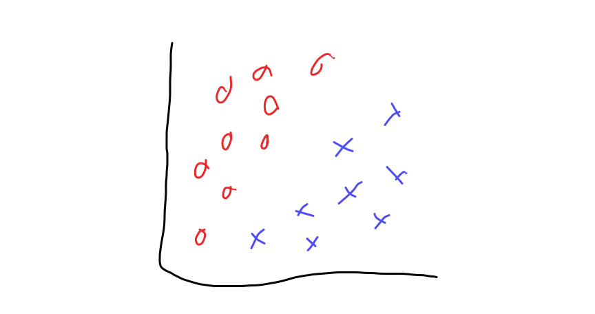
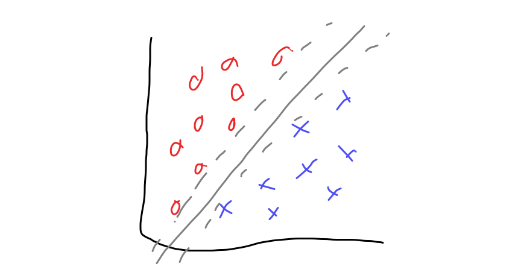
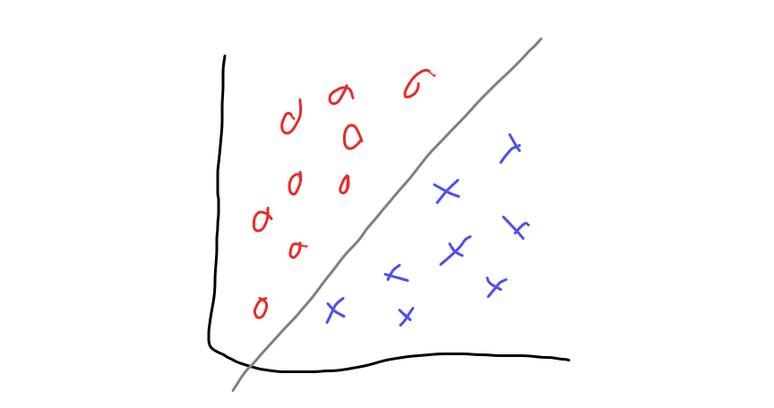
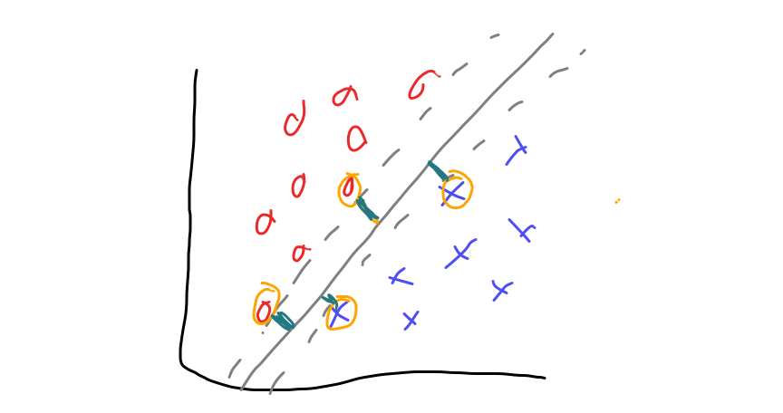
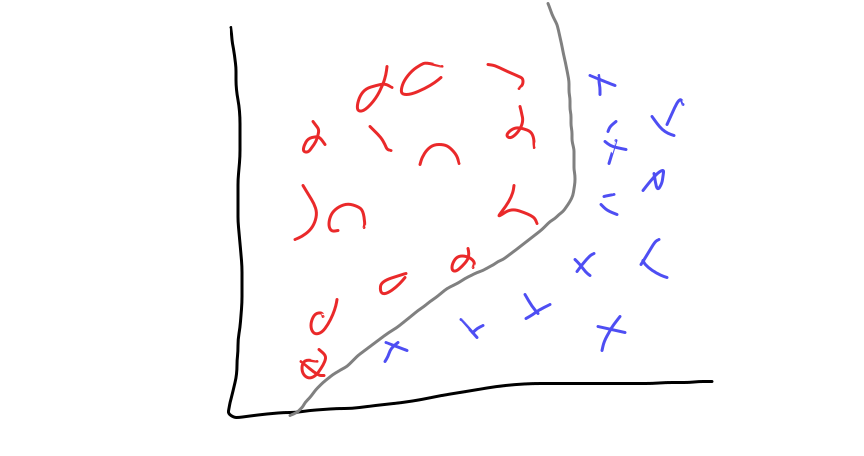
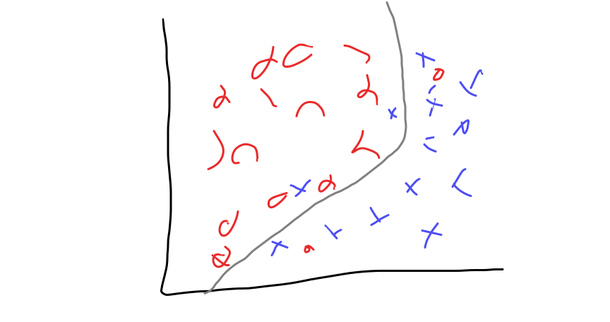

31. SVM and Parameter Optimizing¶
import matplotlib.pyplot as plt
import numpy as np
import seaborn as sns
import pandas as pd
from sklearn import datasets
from sklearn import cluster
from sklearn import svm, datasets
from sklearn.model_selection import GridSearchCV
from sklearn.model_selection import train_test_split
from sklearn import tree
31.1. Support Vectors¶
31.1.1. Basic Idea¶
Imagine we have data that is like this 
We might want to choose a decision boundary to separate it. We could choose any one of these three gray lines and get 100% training accuracy.

We could say that the best one is the solid one because it best seaparates the data.

SVM does this, it finds the ‘support vectors’ which are the points of each class closes to the others and then finds the decison boundary that has the maximum margin, where the margin is the space between the boundary and each class.

When SVM is looking only for straight lines, it’s called linear SVM, but SVM can look for different type of boundaries. We do this by changing the kernel function. A popular one is called the radial basis function or rbf it allows smooth curvy lines.
So that the SVM can work on data like this: 
It can also allow handle data that is not perfectly separable like the following by minimizing the number of errors and maximizing the margin. 
31.1.2. SVM in Sklearn¶
First we’ll load the data and separate the featurs and target (\(X\) and \(y\))
iris_df = sns.load_dataset('iris')
iris_X = iris_df.drop(columns='species')
iris_y = iris_df['species']
Next, we will split the data into test and train.
iris_X_train, iris_X_test, iris_y_train, iris_y_test = train_test_split(iris_X,iris_y)
Fitting the model is just like other models we have seen:
instantiate the object
fit the model
score the model on the test dat
svm_clf = svm.SVC()
svm_clf.fit(iris_X_train, iris_y_train)
svm_clf.score(iris_X_test, iris_y_test)
1.0
We see that this fits pretty well with the default parameters.
31.2. Grid Search Optimization¶
We can optimize, however to determing the different parameter settings.
A simple way to do this is to fit the model for different parameters and score for each and compare.
We’ll focus on the kernel, which controls the type of line, and \(C\) which controls the regularization.
param_grid = {'kernel':['linear','rbf'], 'C':[.5, 1, 10]}
svm_opt = GridSearchCV(svm_clf,param_grid,)
The GridSearchCV object is constructed first and requires an estimator object and a dictionary that describes the parameter grid to search over.
The dictionary has the parameter names as the keys and the values are the values for that parameter to test.
The fit method on the Grid Seearch object fits all of the separate models.
svm_opt.fit(iris_X_train,iris_y_train)
GridSearchCV(estimator=SVC(),
param_grid={'C': [0.5, 1, 10], 'kernel': ['linear', 'rbf']})
Then we can look at the output.
svm_opt.cv_results_
{'mean_fit_time': array([0.00289998, 0.00251231, 0.00241199, 0.00246234, 0.00236278,
0.00254312]),
'std_fit_time': array([9.43396289e-04, 9.16188468e-05, 2.15432295e-04, 7.71703746e-05,
6.19672591e-05, 1.00904714e-04]),
'mean_score_time': array([0.00186067, 0.00192857, 0.00187421, 0.00202661, 0.00191517,
0.00188088]),
'std_score_time': array([5.72791196e-05, 3.97894823e-05, 1.15552117e-04, 1.39775230e-04,
1.37929333e-04, 1.20350147e-04]),
'param_C': masked_array(data=[0.5, 0.5, 1, 1, 10, 10],
mask=[False, False, False, False, False, False],
fill_value='?',
dtype=object),
'param_kernel': masked_array(data=['linear', 'rbf', 'linear', 'rbf', 'linear', 'rbf'],
mask=[False, False, False, False, False, False],
fill_value='?',
dtype=object),
'params': [{'C': 0.5, 'kernel': 'linear'},
{'C': 0.5, 'kernel': 'rbf'},
{'C': 1, 'kernel': 'linear'},
{'C': 1, 'kernel': 'rbf'},
{'C': 10, 'kernel': 'linear'},
{'C': 10, 'kernel': 'rbf'}],
'split0_test_score': array([1., 1., 1., 1., 1., 1.]),
'split1_test_score': array([1. , 0.95652174, 1. , 1. , 1. ,
1. ]),
'split2_test_score': array([0.90909091, 0.86363636, 1. , 0.90909091, 0.95454545,
0.90909091]),
'split3_test_score': array([0.90909091, 0.90909091, 0.90909091, 0.90909091, 0.86363636,
0.90909091]),
'split4_test_score': array([0.95454545, 1. , 1. , 1. , 0.95454545,
1. ]),
'mean_test_score': array([0.95454545, 0.9458498 , 0.98181818, 0.96363636, 0.95454545,
0.96363636]),
'std_test_score': array([0.04065578, 0.05308228, 0.03636364, 0.04453618, 0.04979296,
0.04453618]),
'rank_test_score': array([4, 6, 1, 2, 4, 2], dtype=int32)}
We note that this is a dictionary, so to make it more readable, we can make it a DataFrame.
pd.DataFrame(svm_opt.cv_results_)
| mean_fit_time | std_fit_time | mean_score_time | std_score_time | param_C | param_kernel | params | split0_test_score | split1_test_score | split2_test_score | split3_test_score | split4_test_score | mean_test_score | std_test_score | rank_test_score | |
|---|---|---|---|---|---|---|---|---|---|---|---|---|---|---|---|
| 0 | 0.002900 | 0.000943 | 0.001861 | 0.000057 | 0.5 | linear | {'C': 0.5, 'kernel': 'linear'} | 1.0 | 1.000000 | 0.909091 | 0.909091 | 0.954545 | 0.954545 | 0.040656 | 4 |
| 1 | 0.002512 | 0.000092 | 0.001929 | 0.000040 | 0.5 | rbf | {'C': 0.5, 'kernel': 'rbf'} | 1.0 | 0.956522 | 0.863636 | 0.909091 | 1.000000 | 0.945850 | 0.053082 | 6 |
| 2 | 0.002412 | 0.000215 | 0.001874 | 0.000116 | 1 | linear | {'C': 1, 'kernel': 'linear'} | 1.0 | 1.000000 | 1.000000 | 0.909091 | 1.000000 | 0.981818 | 0.036364 | 1 |
| 3 | 0.002462 | 0.000077 | 0.002027 | 0.000140 | 1 | rbf | {'C': 1, 'kernel': 'rbf'} | 1.0 | 1.000000 | 0.909091 | 0.909091 | 1.000000 | 0.963636 | 0.044536 | 2 |
| 4 | 0.002363 | 0.000062 | 0.001915 | 0.000138 | 10 | linear | {'C': 10, 'kernel': 'linear'} | 1.0 | 1.000000 | 0.954545 | 0.863636 | 0.954545 | 0.954545 | 0.049793 | 4 |
| 5 | 0.002543 | 0.000101 | 0.001881 | 0.000120 | 10 | rbf | {'C': 10, 'kernel': 'rbf'} | 1.0 | 1.000000 | 0.909091 | 0.909091 | 1.000000 | 0.963636 | 0.044536 | 2 |
It also has a best_estimator_ attribute, which is an estimator object.
type(svm_opt.best_estimator_)
sklearn.svm._classes.SVC
This is the model that had the best cross validated score among all of the parameter settings tested.
svm_opt.best_estimator_.score(iris_X_test,iris_y_test)
0.9736842105263158
We can then use this model on the test data.
Try it Yourself
Find the best criterion, max depth, and minimum number of samples per leaf
dt = tree.DecisionTreeClassifier()
params_dt = {'criterion':['gini','entropy'],'max_depth':[2,3,4],
'min_samples_leaf':list(range(2,20,2))}
To do this, we do just as we did above, instantiate and fit the model.
dt_opt = GridSearchCV(dt,params_dt)
dt_opt.fit(iris_X_train,iris_y_train)
GridSearchCV(estimator=DecisionTreeClassifier(),
param_grid={'criterion': ['gini', 'entropy'],
'max_depth': [2, 3, 4],
'min_samples_leaf': [2, 4, 6, 8, 10, 12, 14, 16, 18]})
Then we can use the best_params_ attribute to see the best parameter settings.
dt_opt.best_params_
{'criterion': 'gini', 'max_depth': 3, 'min_samples_leaf': 2}
31.3. Questions after class¶
31.3.1. Can this be used on more types of machine learning than just decision trees and svm?¶
Yes, this can be used on any estimator in scikit learn. It can even be used on other models that adhere to the required API.
GridSearchCV repeatedly:
sets the parameter values from param_grid
runs cross_val_score on the data